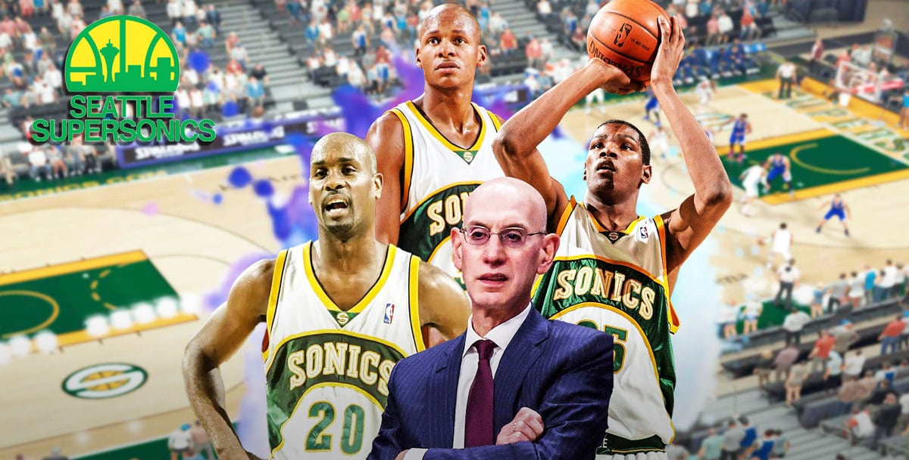

NBA estuda a entrada de mais franquias.

O comissário da NBA, Adam Silver falou, no domingo (4), sobre a expansão da liga e a inclusão de novos times, que começará a ser discutida em 2024. Os rumores não são novos. No entanto, dessa vez, o mandatário foi mais enfático ao “anunciar” o início das discussões sobre ampliar o torneio para além de 30 franquias. Durante uma entrevista, antes do segundo jogo das Finais da NBA, Shaquille O’Neal perguntou sobre a expansão. Em resposta, Silver disse que Seattle e Las Vegas são “possibilidades”. Mas, para isso acontecer, afirmou que precisará negociar questões como direitos de televisão. Um dos tópicos que pretende começar no próximo ano. Assim, o comissário alegou que para focar na expansão dos times em 2024, precisa cumprir outras questões antes. Além disso, acrescentou que “não há nada específico em mente”, mas aumentar o número de franquias é algo que “faz sentido para o futuro”.